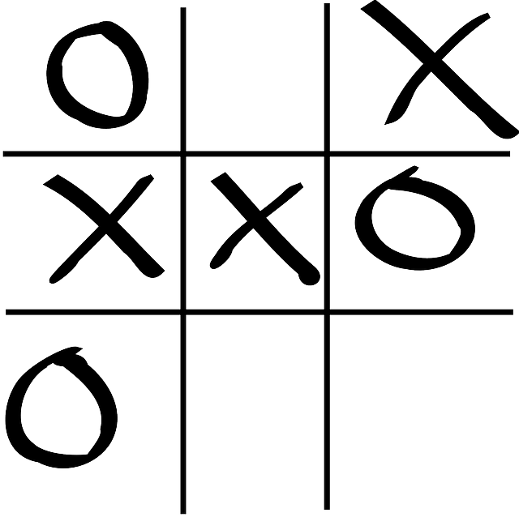

Projekty
- Kółko i krzyżyk 
- Szubienica
- Todolist
- Tic Tac Toe
- Hangman
- Todolist
Kółko i krzyżyk jest grą strategiczną rozgrywaną przez dwóch graczy. Gracze obejmują pola na przemian dążąc do objęcia trzech pól w jednej linii, przy jednoczesnym uniemożliwieniu tego samego przeciwnikowi. Pole może być objęte przez jednego gracza i nie zmienia swego właściciela przez cały przebieg gry. W najbardziej popularnej w Polsce wersji gra odbywa się na polu o wymiarach 3x3.

Pierwszy gracz wymyśla słowo, ujawniając na przykład za pomocą poziomych kresek liczbę tworzących je liter. Drugi z graczy stara się odgadnąć litery słowa. Za każdym razem, gdy mu się to uda, pierwszy gracz wstawia literę w odpowiednie miejsce; w przeciwnym wypadku rysuje element symbolicznej szubienicy i wiszącego na niej ludzika. Jeżeli pierwszy gracz narysuje kompletnego „wisielca” zanim drugi odgadnie słowo, wówczas wygrywa. W zależności od wcześniej ustalonego stopnia skomplikowania rysunku „wisielca” (liczba elementów potrzebna do jego narysowania), gra pozwala na mniej lub więcej pomyłek odgadującego

Nadmiar obowiązków potrafi przytłoczyć – jednak nie musi tak być. Todoist pomoże Ci śledzić wszystko – od prostych spraw do najbardziej ambitnych projektów. Dzięki temu będziesz mógł wykonać pracę na czas i cieszyć się spokojem. Nie będziesz musiał się martwić, że zapomnisz o czymś ważnym i zyskasz dzięki temu poczucie kontroli. Będziesz spokojniejszy oraz bardziej zmotywowany, aby osiągnąć swoje cele. Todoist pomoże Ci przenieść wszystkie zadania i myśli z Twojej głowy prosto na uporządkowaną listę zadań. W dowolnym miejscu i czasie dzięki synchronizacji w czasie rzeczywistym i z dostępem ze wszystkich Twoich ulubionych urządzeń – w tym z telefonu z systemem Android, tabletu, komputera stacjonarnego oraz w przeglądarkach internetowych. Nawet, gdy jesteś offline.
For English users
Tic-tac-toe is a strategic game played by two players. Players include alternating fields, aiming to cover three fields in one line, while preventing the same opponent. The field can be covered by one player and does not change its owner throughout the course of the game. In the most popular version in Poland, the game takes place on a 3x3 field.
First player reveals a word, by making horizontal strokes of letters that are forming them. Second player tries to guess the correct letters. When he guess the letter right, first player puts the letter in correct place; otherwise he draws an element of classic hangman and a human hanging on it. If the first player draws a complete "hangman" before second player guess the word, he wins. Depending on the complexity of the drawing hangman, the game allows more or less guessing mistakes.
Excessive duties can overwhelm - but it does not have to be that way. Todoist will help you track everything - from simple matters to the most ambitious projects. Thanks to this you will be able to do the work on time and enjoy the peace. You will not have to worry about forgetting something important and you will gain a sense of control. You will be calmer and more motivated to achieve your goals. Todoist will help you transfer all tasks and thoughts from your head straight to an ordered list of tasks. Anytime, any time, thanks to real-time synchronization and access from all your favorite devices - including the Android phone, tablet, desktop computer and web browsers. Even when you're offline.